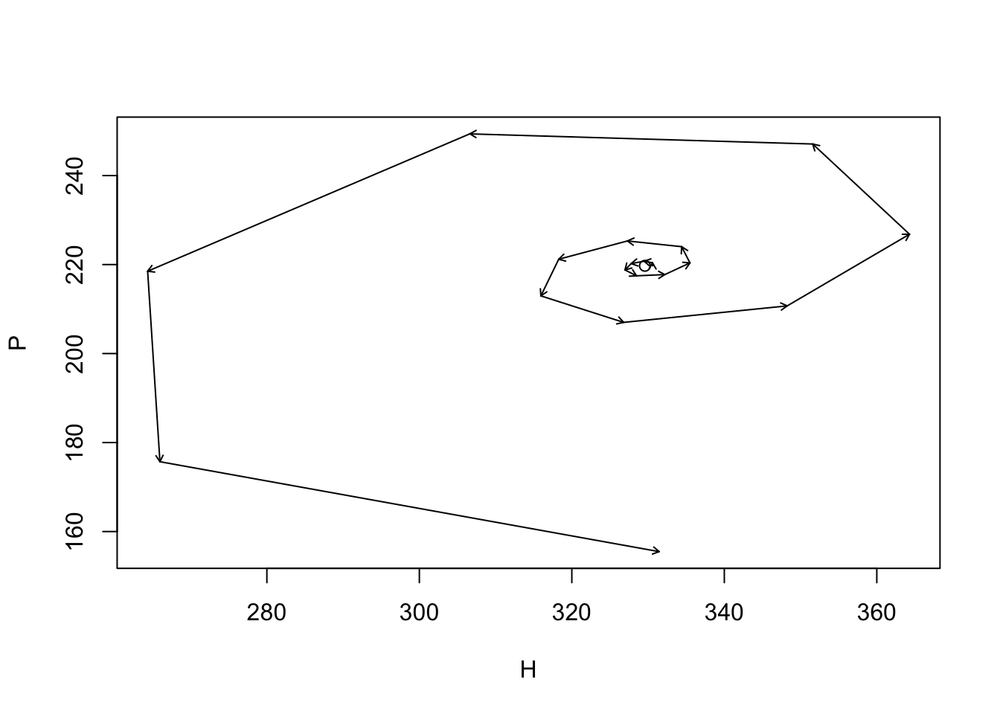
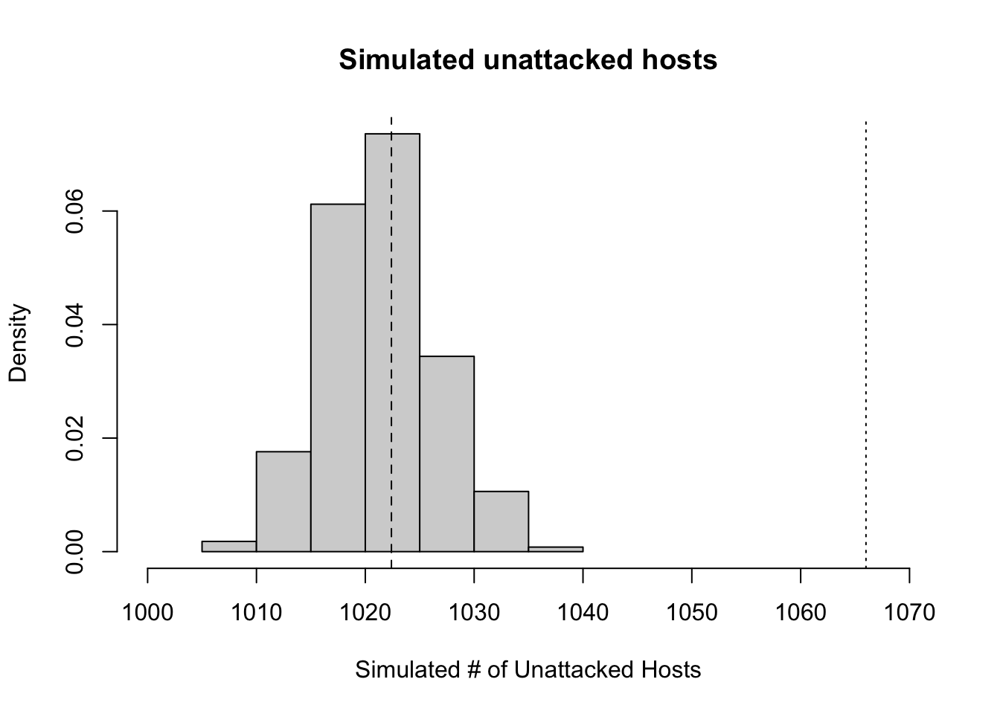
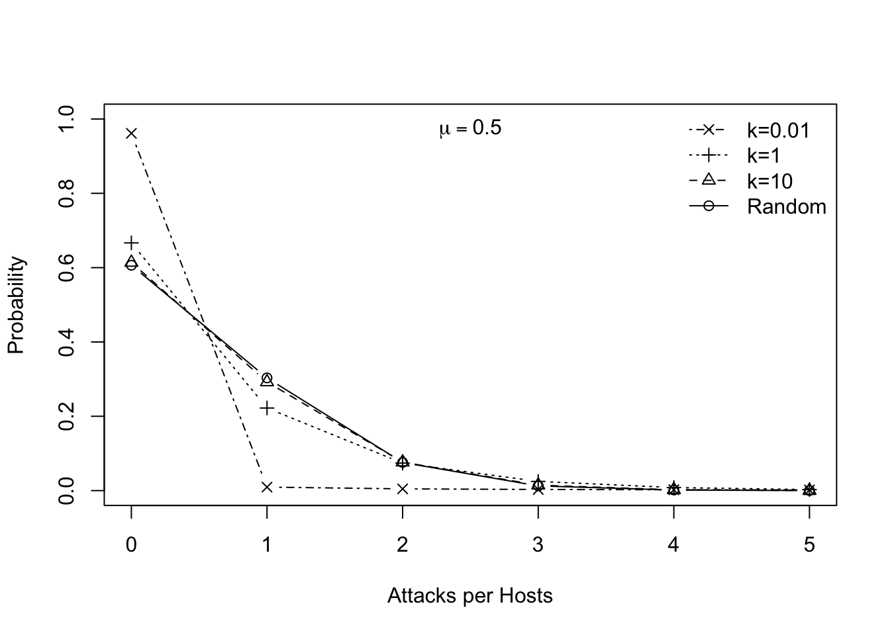
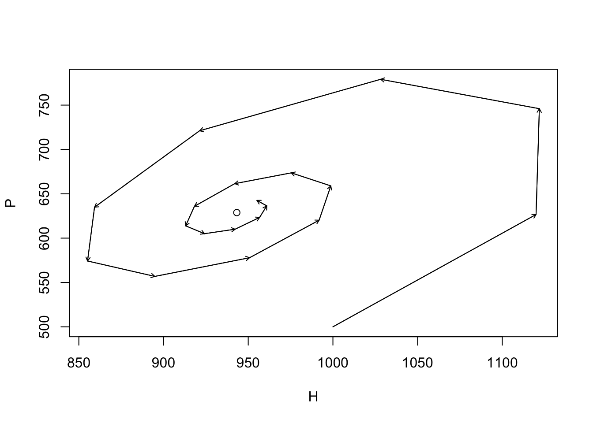

time <- 20; R <- 3; a <- .005
HPs <- data.frame(Hs <- numeric(time), Ps <- numeric(time))11 Host-parasitoid relations
A parasitoid is a ghastly thing. These animals, frequently small wasps, characteristically lay an egg on their hosts, often a caterpillar, the young hatch out, and then slowly consume the juicy bits of the host. Neither the adult wasp nor their larvae immediately kill their host. Many eggs can be laid on a host, and many larvae can live (at least briefly) in the host. Ultimately, however, the host is gradually consumed and one or a few larvae per host metamorphosizes into an adult. Thus parasitoid larvae always consume and kill their hapless host. In this sense, their natural history is intermediate between that of predator and parasite—they are parasite-like, or a parasitoid. Thank the gods for parasitoids, as they often help suppress other animals that we like even less, such as herbivores that eat our crops. There are even parasitoids of parasitoids, or hyperparasitoids. And they are among the most diverse taxonomic groups of all animals.
There are a variety of characteristics about host–parasitoid relations that might make them different from the kind of predator–prey relations that we have been thinking about up until now. In particular, the life cycles of host and prey are so intimately connected that there is a one-to-one correspondence between dead hosts and the number of parasitoids in the next generation. If we know how many hosts are killed, then we know approximately how many parasitoids are born.
11.1 Independent and random attacks
In keeping with convention of parasitoid models, let us describe dynamics of hosts and their parasitoid enemies with a discrete time model (Nicholson and Bailey 1935; May 1978). This makes sense, as these organisms, typically insects, frequently complete their life cycles together and within a year. Let us pretend that the hosts, \(H\), grow geometrically in the absence of parasitoids, such that \(H_{t+1} = RH_t\). If we assume that some individuals are attacked and killed by parasitoids, \(H_a\), then this rate becomes \[ H_{t+1} = R\left( H_t - H_a \right) \tag{11.1}\] Further, we assume a couple things about parasitoid natural history. First, we pretend the parasitoids search randomly and independently for prey, and are able to search area, \(a\) (“area of discovery”), in their life time. The total number of attack events then is \(E_t=aH_tP_t\): adults may lay an egg on any host it encounters, but this event does not kill the host. Therefore, hosts can receive more than one egg, thereby making the number of attacked hosts lower than the number of attack events, \(E_t\). Each attack occurs as a random event, and for now we assume that each attack is independent of all others.
For many species of parasitoids, only one adult can emerge from a single host, regardless of how many eggs were laid on that host. Therefore, the number of emerging adult parasitoids, \(P_{t+1}\), is simply the number of hosts that were attacked at all, whether the host received one egg or many. Therefore, the number of parasitoids at time \(t+1\) is merely the number of hosts that were attacked, and we can represent this as \[ P_{t+1} = H_a. \tag{11.2}\] The assumption of one dead host = one new parasitoid can be easily relaxed if we introduce a constant \(q\), such that \(P_{t+1} = qH_a\).
Nicholson and Bailey (1935) took advantage of a well known discrete probability distribution, the Poisson distribution1 which describes the probability of observing a particular number of events in a specified time interval or area, when those events occur randomly and independently. It is defined as \[P\left(x\right) = \frac{\mu^x e^{-\mu}}{x!} \] where the probability of observing \(x\) events (in a given time interval) depends on the overall average rate \(\mu\) and the number of observed events. It generates the series \[\begin{equation*} \frac{1}{e^\mu}, \frac{\mu}{1!e^\mu}, \frac{\mu^2}{2!e^\mu}, \cdots \frac{\mu^r}{r!e^\mu} \end{equation*}\] representing the probabilities of occurrence of 0, 1, 2, \(r\). The exclamation point indicates the factorial \[x! = x(x-1)(x-2)...(1)\] and where \(0!=1\) by definition. This distribution allows us to predict the number of potential hosts that escape attack is \(e^{-\mu}\) where \(\mu=aP\), the per parasitoid attack area, \(a\), times the number of parasitoids, \(P\). We can then use this to create a simple discrete analytical model of host–parasitoid dynamics. \[ H_{t+1} = R H_te^{-aP_t} \tag{11.3}\]
1 This distribution was discovered by a French mathematician (Sim'{e}on-Denis Poisson (1781–1840), so we pronounce the name “pwah-sohn,” like the “fois” of fois gras, and the “sohn” with a quiet “n,” like, well, like the French would say it.
\[ P_{t+1} = H_t \left(1-e^{-aP_t}\right) \tag{11.4}\] Parameter \(a\) is known as the “area of discovery,” the area searched during a parasitoid’s lifetime. The greater the area searched (i.e., larger \(a\)) means more hosts killed, and fewer to survive and contribute to the next generation. The Poisson distribution tells us that if attacks are random and independent, then \(e^{-aP_t}\) is the probability of a host not being attacked. Therefore, \(H_te^{-aP_t}\) is the expected number of hosts which are not attacked and survive to reproduce.
We can find the equilibrium for this discrete model. Recall that, in models of continuous differential equations, this meant letting \(dN/dt = 0\). In the discrete case, it means letting \(N_{t+1}-N_t=0\). The equilibrium, \(N^*\), is the value of \(N\) when this is true, so \(N^*=N_{t+1}=N_t\). We use this to find the equilibrium of the parasitoids, starting with Equation 11.3, \[\begin{align} H^*&=RH^*e^{-aP_t}\notag\\ 1 &=Re^{-aP_t} \notag\\ P^*&=P_t=\frac{\log R}{a} \end{align}\] If we recognize that in Equation 11.4, \(P_{t+1}=H_t-H_{t+1}/R\), and that \(H^*=H_t=H_{t+1}\), then we find the host equilibrium \[\begin{align} H^*&=P^*\frac{R}{R-1}. \end{align}\]
11.1.1 Simulating simple host-parasitoid dynamics
Here we motivate the Nicholson-Bailey model with a simulation of these dynamics. It may provide a more intuitive understanding than simply throwing a probability distribution at the problem. In the end, we wind up at the same place, and this should be reassuring.
The Nicholson-Bailey model assumes that parasitoids search a fixed area, and each attacks hosts randomly and independently. We set the duration of the time series, the model parameters, and create an empty data frame to hold the results.
Next we calculate the equilibrium, and use a nearby point for the initial abundances.
Pst <- log(R)/a; Hst <- Pst*R/(R-1)
HPs[1, ] <- c(Hst+1, Pst)We then project the dynamics, one generation at a time, for each time step.
for(t in 1:(time-1)) HPs[t+1,] <- {H <- R * HPs[t,1] * exp( -a * HPs[t,2] )
P <- HPs[t,1]*(1-exp(-a*HPs[t,2]))
c(H,P) }Last we plot the trajectory, placing a point at the (unstable) equilibrium, and using arrows to highlight the direction and magnitude of the increment of change per time step.
plot(HPs[,1], HPs[,2], type="n", xlab="H", ylab="P"); points(Hst, Pst);
arrows(HPs[-time,1], HPs[-time,2], HPs[-1,1], HPs[-1,2], length=.05)
11.1.1.1 Simulating Random Attacks
This model makes strong assumptions about the proportion of hosts that escape attacks, that depends on parasitoid attacks being random and independent. Therefore let us simulate parasitoid attacks that are random and independent and compare those data to field data. Let’s start with some field data collected by Mark Hassell (May 1978), which are the number of parasitoid larvae per host, either 0, 1, 2, 3, or 4 larvae.
totals <- c(1066, 176, 48, 8, 5)Here, 1066 hosts have no larvae. We can recreate the data set, where we have one observation per host: the number of larvae in that host.
obs <- rep(0:4, totals)To simulate random attacks, let’s use the same number of hosts, and the same number of attacks, and let the computer attack hosts at random. We calculate the total number of hosts, \(H\), and the total and mean number of attacks experienced by hosts.
H <- sum( totals )
No.attacks <- sum(obs)
mean.attacks <- mean(obs)Next, the predators attack (or ‘sample’) the hosts at random and with equal probability. To code this, we identify the hosts by numbering them 1–\(H\). We then attack these hosts independently, that is, we replace each attacked host back into the pool of possible prey.
attack.events <- sample(x=1:H, size=No.attacks, replace=TRUE)We then count the number times different hosts were attacked.
N.attacks.per.host <- table(attack.events)and then find count the number of hosts that were attacked once, twice, or more.
(tmp <- table( N.attacks.per.host ) )N.attacks.per.host
1 2 3
243 35 1 We see, for instance, that 35 hosts were attacked twice. This also allows us to know how many hosts were not attacked,
(not.att <- H - sum(tmp))[1] 1024Let’s compare the observed data to the simulated data.
obs.sim <- rep(0:max(N.attacks.per.host), c(not.att, tmp))
table(obs) ; table(obs.sim)obs
0 1 2 3 4
1066 176 48 8 5 obs.sim
0 1 2 3
1024 243 35 1 There seem to be fewer unattacked hosts and more attacked hosts in the random-attack simulation than in the observed data. Is this simply a consequence of the observed values being one of many random possibilities? Or is it a systematic difference? How do we check this?
One way to check whether the observed data differ from our model of random and independent attacks is to simulate many such observations, and compare the observed data (rtotals[1] unattacked hosts) to the distribution of the simulated results. Here we do this by performing \(n\) simulations of the same steps we used above.
n <- 1000
unatt.sim<- sapply(1:n, function(j) { ## Repeat n times...
## simulate the same number of attacks.
host.sim.att <- sample(x=1:H, size=No.attacks, replace=TRUE)
## subtract the number of attacked hosts from the total in the host population
## The number of attacks on each attacked host
attacks.per <- table(host.sim.att)
## the number of attacked hosts
n.attd <- length( attacks.per)
## the number not attacked
H - n.attd
} )Next we just make a histogram (Fig. Figure 11.1) of the number of unattacked hosts, adding a dotted line to show where the true data lie, and a dashed line for the prediction, under the assumption of random and independent attacks, based on the Poisson distribution.
hist(unatt.sim, xlab="Simulated # of Unattacked Hosts",
prob=TRUE, xlim=c(1000, 1070), main="Simulated unattacked hosts" )
abline(v=1066, lty=3)
abline(v=exp(-mean.attacks)*H, lty=2)
Our simulation results (Fig. Figure 11.1) indicate that the observed data include far more unattacked hosts than expected by chance.
Another, quicker way to evaluate the assumption of independent and random attacks is to compare the ratio of the variance of the observed larvae per host to the mean. If the data follow a Poisson distribution, this ratio is expected to equal to one.
(I <- var(obs)/mean(obs))[1] 1.40413This ratio is greater than one, but we do not know if this could be due to chance. We can test it, because under the null hypothesis, we expect that the product of the ratio and the number of hosts, \(H\), follows a \(\chi^2\) distribution, with \(H-1\) degrees of freedom. We can ask how likely this ratio, or a more extreme ratio, is, if attacks are random and independent. We compare it to the cumulative probability density function for the \(\chi^2\) distribution.
1-pchisq(I*H, df=H-1)[1] 0We find that, given this large number of observations, it is exceedingly unlikely to observe a ratio this large or larger. It is nice that this agrees with our simulation! We feel more confident when a parametric test agrees with a simulation of our ideas; perhaps both are not necessary, but working through both helps us to understand what we are doing.
11.2 Aggregation leads to coexistence
The Nicholson-Bailey model with independent and radnom attacks, Equation 11.3, Equation 11.4, predicts that the parasitoid and host become extinct. That is potentially useful - sometimes it is exactly what we observe in local subpopulations. It may also suggest that we are missing something because not all populations become extinct. This is a feature of models that we like: they allow us to rigorously evaluate our assumptions and falsify them. All scientific ideas ultimately have to be described in a manner that could allow us to, in principle, falsify them. If we have some confidence in the model above, this falsification might lead us to ask, “what is the model missing?”
Perhaps what we are missing is some important parasitoid natural history. Parasitoids tend to aggregate on particular hosts or on local populations of the hosts. Some hosts are more likely to get attacked than others, resulting in more unattacked hosts and more hosts receiving multiple attacks than predicted under random and independent attacks. This may be related to their searching behavior, or to spatial distributions of hosts in the landscape. When the parasitoids aggregate, they tend to leave the low density host populations unparasitized. As a result, these low density populations act as refuges.
Perhaps we can kill two birds with one stone, and fix both problems with one step. That is what May (1978) and others have done, by assuming that parasitoids aggregate.
May proposed the following logic for one reason we might observe more unattacked hosts than expected. Imagine that the distribution of parasitoids among patches in the landscape can be described with one probability distribution, with some particular mean and variance in the number of parasitoids per patch. Imagine next that their attacks on hosts within each patch are random and independent and thus described with the Poisson distribution. This will result in a compound distribution of attacks — a combination of the among-patch, and within-patch distributions.2 If we examine the distribution of larvae per host, for all hosts in the landscape, we will find a higher proportion of unattacked hosts, and a higher proportion of hosts that are attacked many times.
2 This distribution is actually a mixture of Poisson distributions. The Poisson distribution is determined entirely by its mean, \(\mu\). If we let \(\mu\) itself be a random variable drawn from the Gamma distribution, then we arrive at the negative binomial distribution.
The negative binomial distribution can describe aggregated data, such as the number of larvae per host. Such data are counts greater than or equal to zero, in which the variance is greater than the mean. Thus, the negative binomial distribution can describe greater aggregation than the Poisson distribution (where \(\mu=\sigma^2\)), and thereby describe nature somewhat more accurately. May suggested that while the true distribution of larvae in hosts, in any particular case, was unlikely to truly be a negative binomial, it was nonetheless a useful approximation.
Ecologists frequently use the negative binomial distribution for count data where the variance is greater than the mean. There are different derivations of the distribution, and therefore different parameterizations (Bolker 2008). In ecology, we typically use the mean, \(\mu\), and the overdispersion parameter \(k\). The variance, \(\sigma^2\), is a function of these, where \(\sigma^2 = \mu + \mu^2/k\); by overdispersion we mean that \(\sigma^2 > \mu\). Large values of \(k\) (\(k>10\)) indicate random and independent events rather than aggregation, and the distribution becomes indistinguishable from the Poisson. Small values (\(k<2\)) indicate aggregation.3 Fig. Figure 11.2 shows examples. R has the negative binomial distribution built in (nbinom), but does not use \(k\) as one of its arguments; rather, size \(=k\). Here we generate a graph showing the distribution with different values of \(k\).
3 Although \(k\) is often referred to as a “clumping” or “aggregation” parameter, we might think of it as a “randomness” parameter, because larger values result in more random, Poisson-like distributions.
nb.dat <- cbind(
Random = dnbinom(0:5, mu=.5, size=10^10),
"k=10"=dnbinom(0:5, mu=.5, size=10),
"k=1"=dnbinom(0:5, mu=.5, size=1),
"k=0.01"=dnbinom(0:5, mu=.5, size=.01)
)
matplot(0:5, nb.dat , type="b", pch=1:4, col=1, ylim=c(0,1),
xlab="Attacks per Hosts", ylab="Probability")
legend("topright", rev(colnames(nb.dat)), pch=4:1, lty=4:1, bty='n')
mtext(quote(mu== 0.5), padj=2)
The proportion of unattacked hosts expected under the negative binomial is \((1 + aP_t/k)^{-k}\). Therefore, we can write the analytical expressions for the population dynamics that are very similar to those of the Nicholson-Bailey model, but using the negative binomial distribution. \[ H_{t+1} = RH_t\left(1+\frac{aP_t}{k} \right)^{-k} \tag{11.5}\]
\[ P_{t+1} = H_t - H_t\left(1+\frac{aP_t}{k} \right)^{-k} \tag{11.6}\] May (1978) referred to this as a phenomenlogical model (as opposed to mechanistic) because the negative binomial merely approximates the true, perhaps compound, distribution.
11.2.1 Equilibria for a discrete-time model
The equilibria of the host and parasitoid populations in May’s model Equation 11.5, Equation 11.6, are derived simply, once we decide upon how to describe the condition for an equilibrium (a.k.a. steady state). In models of differential equations, this meant letting \(d N/d t =0\). In the discrete case it means letting \(N_{t+1}-N_t=0\). The equilibrium is the value of \(N\) when this is true, so \(N^*=N_{t+1}=N_t\). Following this train of thought, we have \(H^*=H_{t+1} = H_t\) and \(P^*=P_{t+1} = P_t\).
To solve for equilbria, we begin with the expression for hosts Equation 11.5, and solve for equilibrium parasitoid density. In this case, we can divide Equation 11.5 both sides by \(H^*\). \[\begin{align} 1 &= R\left(1+\frac{aP_t}{k}\right)^{-k}\notag\\ R^{-1} &= \left(1+\frac{aP_t}{k}\right)^{-k}\notag\\ R^{1/k} &= 1 + \frac{aP_t}{k}\notag\\ P^* &= \frac{k}{a} \left(R^{1/k} - 1 \right)\label{eq:16} \end{align}\] Given this, what causes increases in \(P^*\)? Certainly decreasing \(a\) leads to increases in \(P^*\). If a parasitoid population has a smaller \(a\) (i.e. smaller area of discovery), this means that they require less space, and can thereby achieve higher density. The effect of \(k\) is trickier to understand. Smaller \(k\) means more aggregated attack events, which increases the probability that a host larvae survive, which ultimately benefits parasitoid as well as the host.
If we want \(H^*\) as well, we can solve for that too. We see that Equation 11.6 can be rearranged to show \[\begin{align*} P_{t+1} &= H_t - \frac{H_{t+1}}{R} \end{align*}\] and given contant \(H\) and \(P\), \[ \begin{aligned} H^* &= P^* \left(\frac{R}{R-1} \right) \end{aligned} \tag{11.7}\] where \(P^*\) is Equation 11.5.
11.3 Dynamics of the May host–parasitoid model
Here we simply play with May’s model. The following generates a phase plane diagram of the dynamics, although it is not shown. We set the duration of the time series, the model parameters, and create an empty data frame to hold the results.
time <- 20; R <- 3; a <- .005; k <- .6
HP2s <- data.frame(Hs = numeric(time), Ps = numeric(time))Next we calculate the equilibrium, and use a nearby point for the initial abundances.
P2st <- k*(R^(1/k) - 1)/a; H2st <- P2st * R/(R-1)
P2st;H2st[1] 628.8302[1] 943.2453HP2s[1, ] <- c(1000,500)We then project the dynamics, one generation at a time, for each time step.
for(t in 1:(time-1)) HP2s[t+1,] <- {
H <- R * HP2s[t,1] * (1+a*HP2s[t,2]/k)^(-k)
P <- HP2s[t,1] - HP2s[t,1] * (1+a*HP2s[t,2]/k)^(-k)
c(H,P) }Last we plot the trajectory, placing a point at the equilibrium, and using arrows to highlight the direction and magnitude of the increment of change per time step.
{
plot(HP2s[,1], HP2s[,2], type="l", xlab="H", ylab="P")
points(H2st, P2st)
arrows(HP2s[-time,1], HP2s[-time,2], HP2s[-1,1], HP2s[-1,2], length=.05)
}
11.4 In Fine
- Parasitoids are a wildly diverse set of taxa, but largely undescribed.
- We commonly model host-parasitoid in discrete time.
- Hosts grow geometrically, and die when attacked.
- Parasitoids in the next generation are simply the number of attacked hosts.
- Aggregation in attack behavior appears to allow stable coexistence.